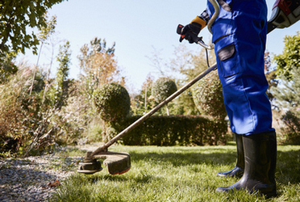
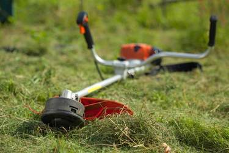
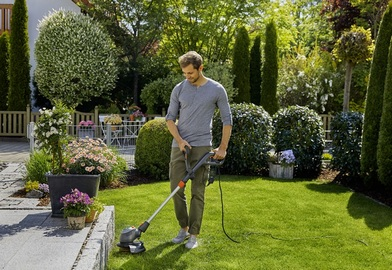

Уход за триммером для травы: правила и рекомендации
Красивый ухоженный газон, аккуратно подстриженная лужайка — это результат использования триммера для травы. При помощи этого инструмента можно быстро привести участок в порядок. В отличие от газонокосилки небольшой и маневренный инструмент легко проникает в труднодоступные места (вокруг деревьев, возле забора, скамеек). Как и любая другая техника, триммер нуждается в грамотном уходе и обслуживании.
Срок службы и работоспособность бензокосы зависит от того, соблюдает ли пользователь правила эксплуатации. Вся информация, которая может потребоваться владельцу, размещена в руководстве. Обязательно изучите этот документ перед тем, как приступать к работе с триммером. А в этой статье остановимся на рассмотрении главных вопросов, касающихся использования инструмента.
Приготовление бензиново-масляной смеси
Большинство триммеров оснащается двухтактными двигателями, которые работают на масляно-топливной смеси. Для её приготовления следует использовать бензин с подходящим октановым числом и масло 2Т. Необходимо соблюдать пропорции, указанные в руководстве.
- 1:25 — на 1 л топлива 40 мл масла;
- 1:50 — на 1 л топлива 20 мл масла.
Смесь должна быть свежей, поэтому не стоит готовить с запасом и долго хранить её. Ни в коем случае не используйте автомобильное масло, так как оно содержит присадки, которые могут привести к поломке мотора триммера. Лучше всего покупать фирменные масла известных производителей. Что касается топлива, то подходят марки АИ-92 и АИ-95.
Обкатка двигателя — почему это важно?
После покупки триммера нужно провести его обкатку. Это способствует увеличению рабочего ресурса двигателя, обеспечивает силовому агрегату защиту от поломок и преждевременного выхода из строя. На начальном этапе эксплуатации бензокосы придерживайтесь таких рекомендаций:
- не нагружайте инструмент на полную мощность сразу, увеличивайте обороты постепенно;
- не допускайте перегрева, следите за температурой мотора;
- после обкатки отработанное масло слейте, залейте новое;
- периодически чистите топливный фильтр и ребра цилиндра щеткой или сжатым воздухом;
- каждые 10 рабочих часов проводите чистку воздушного фильтра.
Крутящий момент двигателя должен повышаться плавно. После запуска мотора дайте инструменту поработать на холостом ходу в течение нескольких минут.
Выбор масла для редуктора
Применение качественных смазочных материалов — важное условие для нормальной работы триммера. Одним из главных механизмов инструмента является редуктор. Он подвергается высоким нагрузкам, что приводит к усиленному износу. Чтобы увеличить рабочий ресурс редуктора, используйте масло, которое соответствует таким требованиям:
- вязкость — консистенция не меняется под воздействием повышенных температур;
- адгезия к металлическим поверхностям — смазка обволакивает рабочие узлы, уменьшая трение между ними;
- подходящий состав — в продукте оптимальное содержание присадок.
При выборе смазки важно обращать внимание также на бренд. Самые лучшие продукты этого типа выпускаются под такими торговыми марками как Husqvarna, Huter, Stihl.
Обслуживание триммера в домашних условиях
Триммеры требуют правильного ухода, особенно те модели, которые работают на бензине. Сложные мероприятия проводятся в сервисном центре, а вот простые операции можно выполнить самостоятельно в гараже. Каждый владелец должен знать, как чистить электрический триммер или мотокосу, как менять фильтрующие элементы, наматывать леску на шпулю и пр.
Двигатель
Двигатель отвечает за обеспечение работоспособности триммеру. Техника популярных брендов комплектуется надежными моторами, которые имеют повышенный рабочий ресурс. Наиболее распространенные проблемы, которые могут возникнуть с силовым агрегатом:
- поломка карбюратора;
- заклинивание;
- снижение компрессии.
Чтобы избежать подобных неприятностей и поддерживать мотор в рабочем состоянии, следите за чистотой воздушного фильтра. Время от времени нужно также удалять грязь с глушителя, чистить его от нагара и менять смечу зажигания.
Режущий механизм
За срезание растительности отвечают ножи и леска. Триммеры, которые комплектуются режущими дисками, способны не только проводить стрижку газонной травы, но и срезать растения с толстыми стеблями (до 7-10 см в диаметре), расчищать заросли. Для заточки деталей используйте напильник. Тупые ножи плохо справляются со своей работой. Это не только сказывается на качестве стрижки, но и оказывает повышенную нагрузку на двигатель.
Шпуля с леской
Ни в коем случае нельзя использовать для стрижки травы металлический трос и проволоку. Для этой работы необходима специальная леска, изготовленная из нейлоновой нити. Купить её можно в специализированном магазине. В инструкции есть указание, леску какого диаметра следует покупать. Слишком толстая нить перегружает двигатель. Для маломощных моделей оптимальный вариант — 1,5 мм, для производительных до 3,2 мм.
Леску нужно наматывать на шпулю руками довольно плотно, но без пресечения витков. Триммерная головка может подавать корд в автоматическом или полуавтоматическом режиме. Следите за целостностью этого элемента, ведь его деформация отрицательно влияет на работу всего инструмента.
Редуктор
Принцип работы триммера: двигатель вращается, передает энергию через редуктор на режущий механизм. Полезно быть ознакомленным с тем, как обслуживать соединительное звено. Достаточно просто его очищать от грязи, при необходимости вносить консистентную смазку.
Защитный кожух
Защитный кожух не только предупреждает возникновение поломок вследствие воздействия внешних факторов, но и повышает безопасность эксплуатации триммера. Не забывайте установить этот элемент перед началом кошения.
Триммер не заводится — что делать?
Иногда процесс кошения приходится отменить из-за того, что триммер не запускается. Чтобы восстановить работоспособность инструмента, сначала нужно найти причину поломки. В электрических косах это может быть проблема с кабелем или заклинивание реле вследствие перепада напряжения в сети. Поможет замена элементов, которые вышли из строя.
Причины, почему не заводится бензиновый триммер:
- топливо потеряло свои свойства — приготовьте свежую смесь, проверьте, запустится ли инструмент;
- плохое качество топлива — не используйте неподходящие бензин и масло;
- попадание масла на свечу — решит проблему очистка или замена детали;
- засорение воздушного фильтра — в систему не поступает воздух, элемент нужно очистить;
- деформация гибкого вала (находится внутри штанги) — нужно разобрать устройство, заменить поврежденный механизм, затем собрать обратно;
- скопление грязи в глушителе — накипь на внутренней поверхности детали может привести к поломке двигателя, поможет тщательная чистка или замена.
Здесь перечислены основные, но не все причины, по каким триммер может не завестись. Если самостоятельно не удалось ничего сделать, обратитесь в сервис, где проводят профессиональное обслуживание и ремонт садовой техники.
Типичные поломки и способы их устранения
Практически любой владелец может провести мелкий ремонт своего триммера. Перечень допустимых работ зависит от вида и модели инструмента. С электрическими агрегатами сложнее: в них получится заменить щетки и проверить контакты. Конечно, если в бензиновом триммере сломался двигатель, самостоятельно делать ничего не стоит. А вот некоторые поломки другого типа можете попытаться устранить.
- Запавший тумблер. Понадобится паяльник и кое-какие знания из сферы электротехники.
- Порванная леска. Для начала нужно правильно выбрать новую нить. Разберите барабан, аккуратно намотайте корд, соберите всё обратно.
- Отпал ограничитель проволоки. Новую деталь можно сделать самостоятельно из нержавейки.
- Сломалась штанга. Эта часть инструмента легко прикручивается к рейкам или скобам.
- Поломка пластикового ножа. Вообще его выбросите. Купите металлические, они более прочные и надежные, служат гораздо дольше.
Однако если у вас нет никаких навыков для ремонта триммера, не рискуйте, сразу несите сломанный инструмент в мастерскую. Производитель очень не рекомендует вмешиваться в конструкцию агрегата. Непрофессиональные действия могут привести к возникновению еще большей проблемы.
Как продлить срок службы триммера?
Сначала выбираем хороший инструмент. Доверяйте продукции известных брендов, учитывайте комментарии и советы специалистов. Такие компании как Husqvarna, Huter, Stihl выпускают надежную технику для сада, дачи, приусадебного участка (бензопилы, газонокосилки, кусторезы и др.). Широкий ассортимент представлен на сайте интернет-магазина «Техносадов». В телефонном режиме вы можете получить ответы на все вопросы, касающиеся выбора и заказа техники.
Триммер для травы будет работать долго, если пользователь соблюдает правила эксплуатации. Рассмотрим главные рекомендации.
- Перед каждым запуском осматривайте рабочие узлы, проверяйте их работоспособность, надежность креплений.
- Не забывайте использовать средства индивидуальной защиты. Закройте уши наушниками, наденьте очки.
- При первом запуске — небольшая нагрузка. Проведите обкатку. В следующий раз можно добавить обороты.
- Каждые 15-20 минут делайте перерывы, это поможет защитить двигатель от перегрева и преждевременного выхода из строя.
- Следите за тем, чтобы во время кошения триммер не падал, не ударялся о твердые предметы.
- Используйте подходящую леску. Она может быть обычной, армированной, витой. Каждая разновидность имеет свои сильные и слабые стороны.
Учитывайте особенности триммера, подбирайте для него хорошие расходные материалы. Для хранения инструмента подойдет закрытое от влаги помещение с оптимальным уровнем влажности и комфортной температурой. Чем бережнее вы будете относиться к садовой технике, тем эффективнее и дольше она будет косить ваш участок.